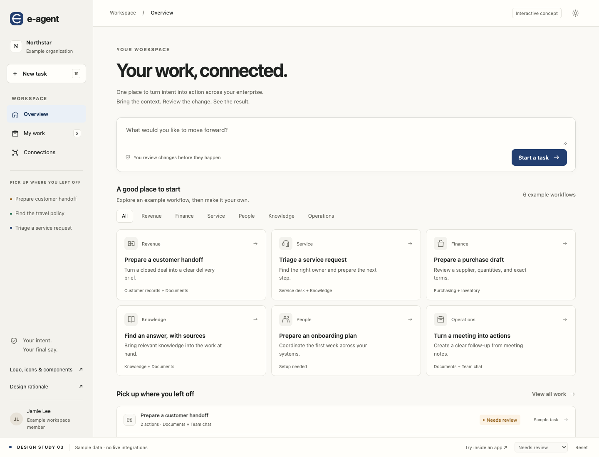
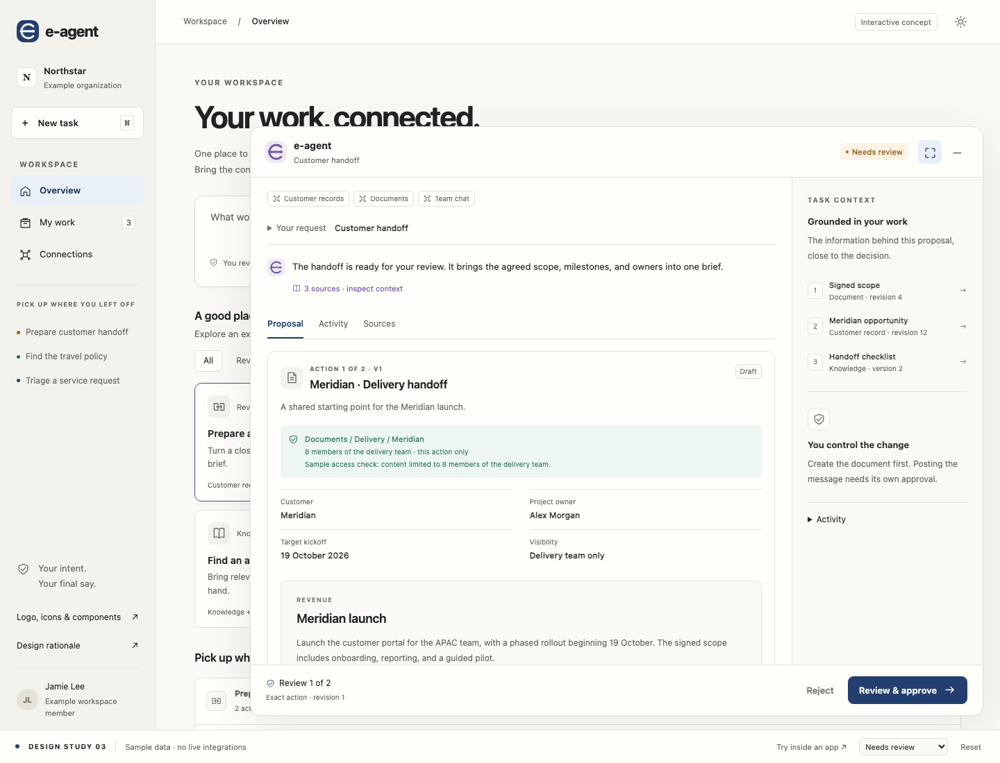

RESEARCH → DESIGN → REVIEW
Make the work clear.
Make the decision human.
An enterprise agent should help people understand and advance a task.
This concept puts the outcome, source context, and approval boundary
into a familiar workspace and an assistant that can stay inside another
app.
All organizations, identities, data, integrations, and workflow results
in this study are fictional. The six scenarios illustrate a product
direction, not e-agent’s currently implemented integration coverage.

Logo, icons & components ↗
All 32 pattern pages ↗
How the references shaped the mockup
01 · TASKS BEYOND CHAT
Intent, artifact, decision, result
A chat message sets the task. A document or action card makes the
proposed outcome inspectable. Status and recovery are visible
outside the conversation.
Agentic Design · UI/UX pattern library ↗
02 · CONTEXT THAT STAYS
Keep sources close to the work
Minimizing or expanding preserves the task. Source excerpts open in
a focused dialog and return to the review. Rich artifacts provide
structure without introducing branching conversations.
Agentic Design · Chat Interface Patterns ↗
03 · ASSISTANCE IN PLACE
No mandatory trip to an AI screen
The customer record includes “Prepare delivery handoff.” The
assistant appears with that context. It asks for missing information
at the point it matters and keeps the person in control.
Alexandra Vasquez · 7 principles for agentic UX ↗
04 · ENTERPRISE CLARITY
Predictable navigation and components
The workspace separates work from connection setup. Consistent
cards, labels, spacing, and disclosure patterns serve several
domains. The People example explains missing access instead of
pretending to complete a task.
UX Pilot · Enterprise UX Design ↗
The core review surface
One primary task column. Supporting context appears beside it when space
allows. The action footer stays visible while the proposal scrolls.

| Pattern |
Concrete design decision |
Guardrail |
|
Human in the loop
|
Review the artifact, then explicitly confirm the exact action.
|
Approving a document cannot also approve a message. |
|
Progressive disclosure
|
Summary and material terms first; sources and audit details on
demand.
|
Scope and material terms precede content and are repeated in
confirmation. Warnings stay visible; full content remains
scrollable.
|
|
Agent status and activity
|
Working, needs input, needs review, verifying, verified, and
unknown are distinct.
|
No invented completion percentage or confidence score. |
|
Trust and transparency
|
Source excerpts, revision labels, acting identity, and action
scope.
|
Explanations use visible evidence, not hidden model reasoning.
|
|
Error recovery
|
Unknown effects offer a read-back check; stale proposals require a
fresh review.
|
An unresolved check stays unresolved. No blind retry. |
|
Mixed initiative
|
The assistant prepares; the user clarifies, inspects, rejects, or
approves.
|
Authority is never inferred from conversational text. |
|
Ambient assistance
|
Contextual launch from a customer record, with minimize and
resume.
|
The prototype reads only its fictional fixture context. |
A restrained visual system
CanvasSurfaceActionVerifiedAttention
System sans-serif for controls and information. A serif document
heading distinguishes the artifact from the assistant. Line icons,
quiet borders, modest elevation, text-labelled status, visible
keyboard focus, and reduced-motion support keep the visual language
consistent.
Try these flows
-
Open Prepare a customer handoff. Expand the
assistant and inspect a source.
-
Review and approve the document. Simulate its read-back. Observe the
separate message approval.
-
Choose Unknown outcome in the study bar. Check the
existing result; it remains unresolved.
-
Choose Needs input, select an audience, and return
to the updated review.
-
Try Prepare an onboarding plan to see the
missing-connection state.
-
Select Try inside an app, then launch the handoff
directly from the customer record.
What this does not establish
This is a reviewable interaction prototype. It does not demonstrate
live integration coverage, permission enforcement, enterprise
readiness, or usability improvement. Role research and task-based
evaluation with real users remain necessary. The existing e-agent
approval and verification contracts remain the implementation
baseline.
The original repository research reports 12–14 remain unchanged.
Earlier application edits were paused when the user requested this
mockup first. This concept has not been applied to production
components.
Explore the mockup →